本包逐图公开合成界面、准确来源及独立结论。ADAPTED是明确适配；MAPPED是同类容器；MISSING是缺直接原参考；FAIL保留可见问题。拍图/并包完整不等于严格全产品1:1，也不证明真实桌面。旧图、旧失败和旧源码身份不倒改；修复须另看新来源。
native-guide-user · 1440×900
MISSING — MISSING_DIRECT_HELP. User-guide H1, native warning, opening paragraphs and creation section are visible; no unexplained crop. Same-size settings base-top supports only container geometry.
同类参考容器：settings-page；不是同名原商业执行。
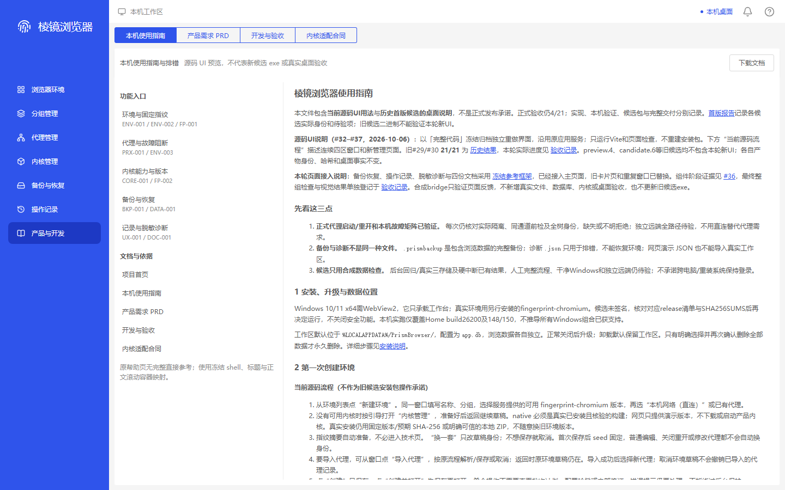
349258f3418f5e46be1fe97693361faa6c20428e149a8b176ad2193d9fb0d68c
native-guide-user-bottom · 1440×900
MISSING — MISSING_DIRECT_HELP. Recovery/error table, section 8 and final evidence links are clear at the true body bottom; download/tabs stay unobscured. Settings base-bottom is not a recovered guide footer.
同类参考容器：settings-page；不是同名原商业执行。
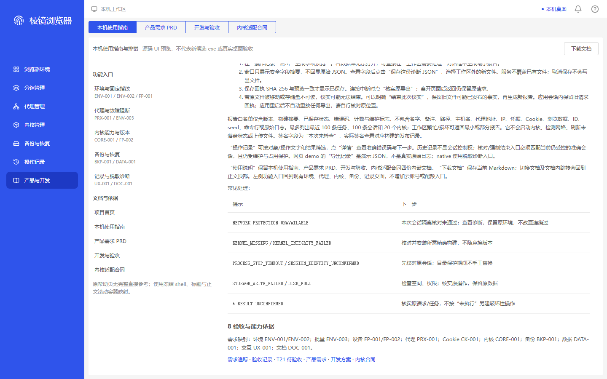
339f2f7fe828c9c48ad0c548360fdb51d7bcdf6efb4e6594c085c428ae76c81a
native-guide-prd · 1440×900
MISSING — MISSING_DIRECT_HELP. PRD H1, dated scope/4/21 boundary and product-boundary table are readable at the real top. Original settings support only horizontal/container geometry, not PRD/body equivalence.
同类参考容器：settings-page；不是同名原商业执行。
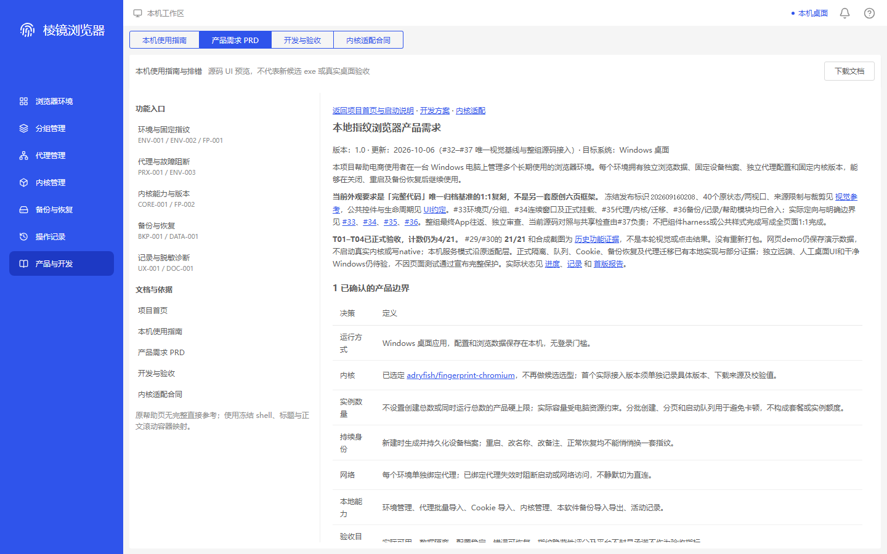
c009b9e404ac129545ad015c735bc3e2849e8dd680f55c27b8e4ae5177e3cb36
native-guide-prd-bottom · 1440×900
MISSING — MISSING_DIRECT_HELP. Dense acceptance rows wrap within the panel; section 8, external references and final disclaimer are visible. Earlier rows partially above the upper scroll edge are expected, not a final-footer crop.
同类参考容器：settings-page；不是同名原商业执行。
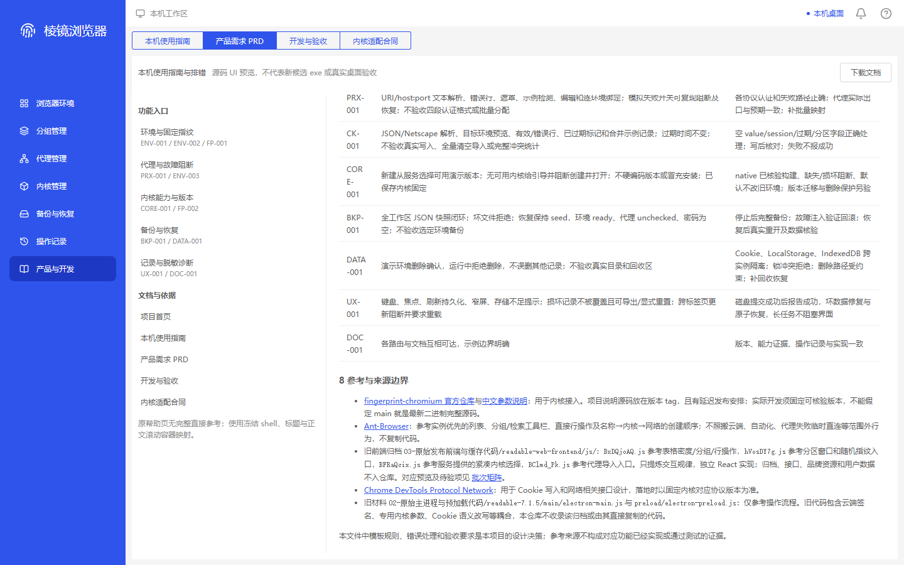
ed1e8e1824bfe24f4da1c4a98831169ee567a687fbb3f70314b49d8892cfb20c
native-guide-development · 1440×900
MISSING — MISSING_DIRECT_HELP. Development H1 and demo/native delivery table show real document content, not a demo application fallback. Warning, navigation and download remain clear; no original-help text match is asserted.
同类参考容器：settings-page；不是同名原商业执行。
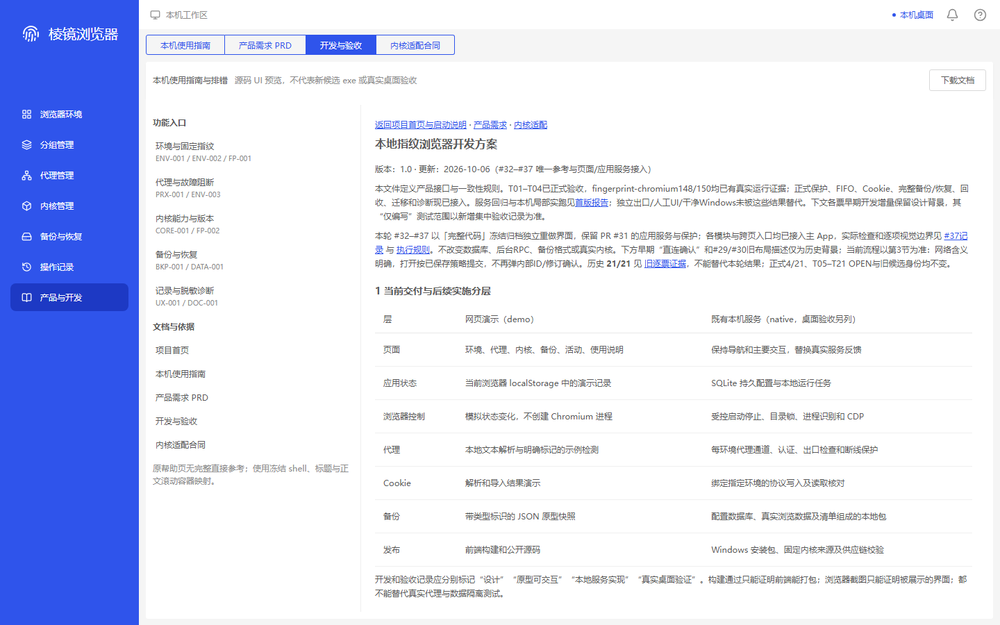
368cd0721f516bbc14fcef5dc006824840c0bbf42c8752a844c2eecbe1125632
native-guide-development-bottom · 1440×900
MISSING — MISSING_DIRECT_HELP. Validation prose, section 13, references and final boundary sentence are clear at the true bottom. No obscuring footer or horizontal crop; settings base-bottom cannot certify the missing original help body.
同类参考容器：settings-page；不是同名原商业执行。
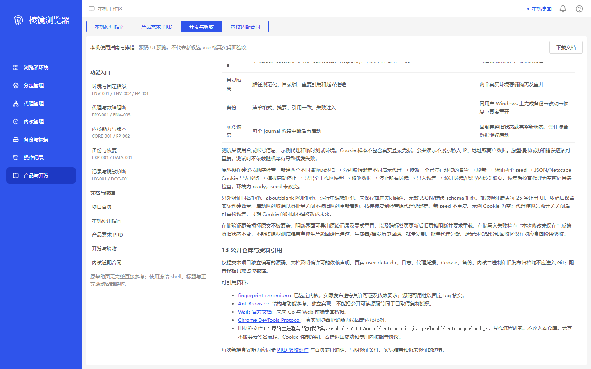
4fdba8a4b1cee7c42f33e917a7e5f24dd5ac8ac054ab23588df6c1b4ca5e9b94
native-guide-kernel · 1440×900
MISSING — MISSING_DIRECT_HELP. Kernel-contract H1, native-evidence disclaimer and requirements table are readable. Later content continues inside the body scroll; this is no original-guide or native capability certificate.
同类参考容器：settings-page；不是同名原商业执行。
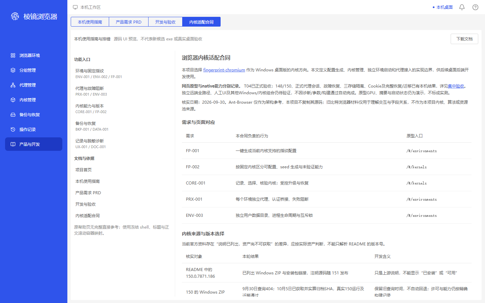
2039929bf9b829ec59525196d4c2e54c99ff871ff2268afef6c0551c27bd100c
native-guide-kernel-bottom · 1440×900
MISSING — MISSING_DIRECT_HELP. Completion-evidence table and final license/boundary paragraph are visible with bottom clearance. No covering footer; container agreement does not recover original-help content.
同类参考容器：settings-page；不是同名原商业执行。
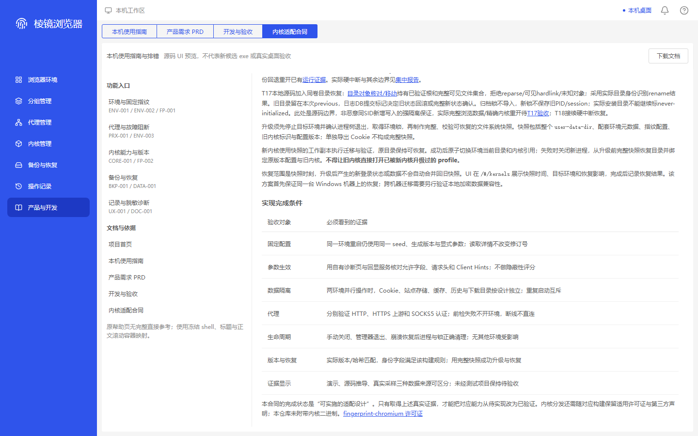
b756a1df10585edbd1c0feba248da176ee8dfc427a462002ad86b940dd6aca7f
native-guide-user · 1280×800
MISSING — MISSING_DIRECT_HELP. Same real user guide reflows to the 780px panel; H1/native warning remain visible. Creation text continues within body scroll, not outer-page clipping. Settings base-top is geometry only.
同类参考容器：settings-page；不是同名原商业执行。
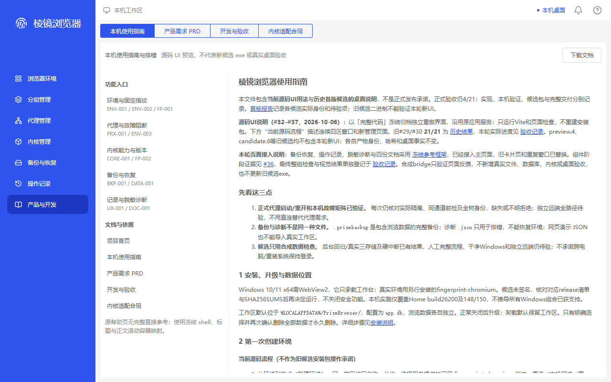
e37a5ed61e7fbc1ed999d1bed2f1fbd9b06355fd6289b28f1e017a200ffa641b
native-guide-user-bottom · 1280×800
MISSING — MISSING_DIRECT_HELP. Error/recovery table, section 8 and final links fit at true bottom; tabs/download/navigation remain clear. No bottom truncation; no direct-help footer match is available.
同类参考容器：settings-page；不是同名原商业执行。
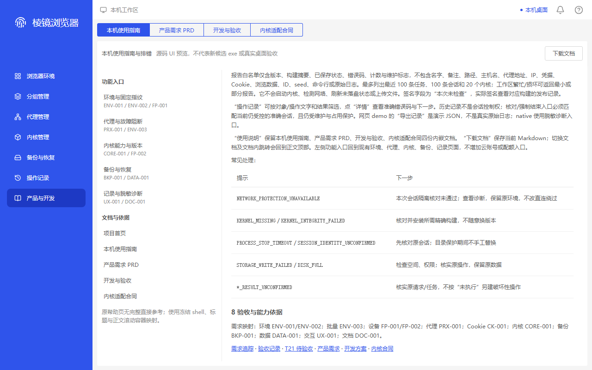
89fb1447b308fda3badf83ff6f94b33a3eb064018b7185c05a09b4e3613c9dd5
native-guide-prd · 1280×800
MISSING — MISSING_DIRECT_HELP. PRD title/scope and initial product-boundary rows reflow without horizontal clipping. Actual top and native warning are visible; original settings cannot establish PRD/help-body equivalence.
同类参考容器：settings-page；不是同名原商业执行。
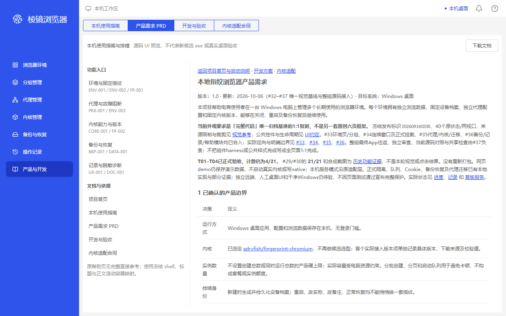
90b316d99ee3195a02f51dafb9ba70067a8ac7ae3d2cc5b30208f7f9758e5759
native-guide-prd-bottom · 1280×800
MISSING — MISSING_DIRECT_HELP. Narrow acceptance ID cells wrap rather than disappear; section 8/source links and final disclaimer remain clear. Earlier partial top-edge rows are expected scrolling, not a lost final footer.
同类参考容器：settings-page；不是同名原商业执行。
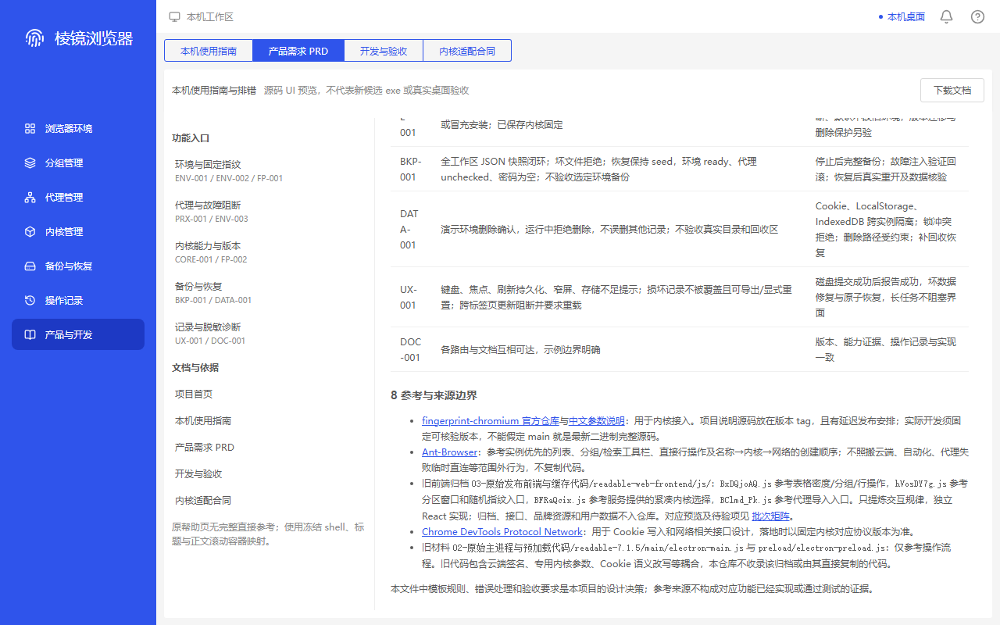
b3718a1e1631c3ba4d91bf6c55780a0835361fd29d854c8a153019577f50672b
native-guide-development · 1280×800
MISSING — MISSING_DIRECT_HELP. Development H1 and the narrower demo/native table are readable; continued rows are inside the scroll body. Demo prose is actual shared document content, not forged native-mode fulfilment.
同类参考容器：settings-page；不是同名原商业执行。
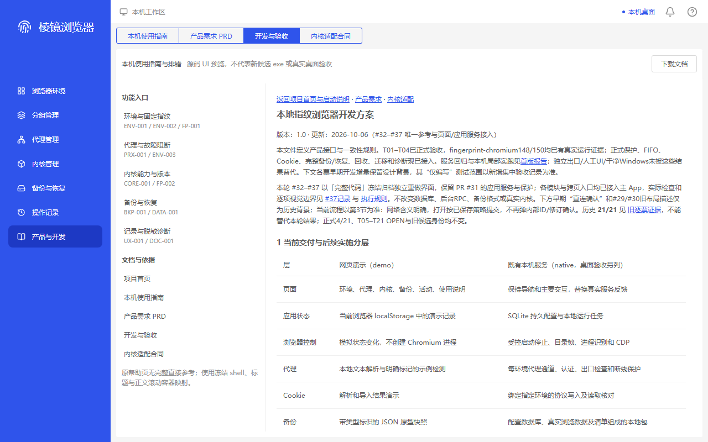
797a4e8418e6cbcdc33c4042fb9fd6427b76b13bd3099556f5ab7f2afececf5f
native-guide-development-bottom · 1280×800
MISSING — MISSING_DIRECT_HELP. Section 13 and the full final reference/boundary lines fit above the real body end. No covering footer, horizontal crop or vanished download/navigation; full original help remains unavailable.
同类参考容器：settings-page；不是同名原商业执行。
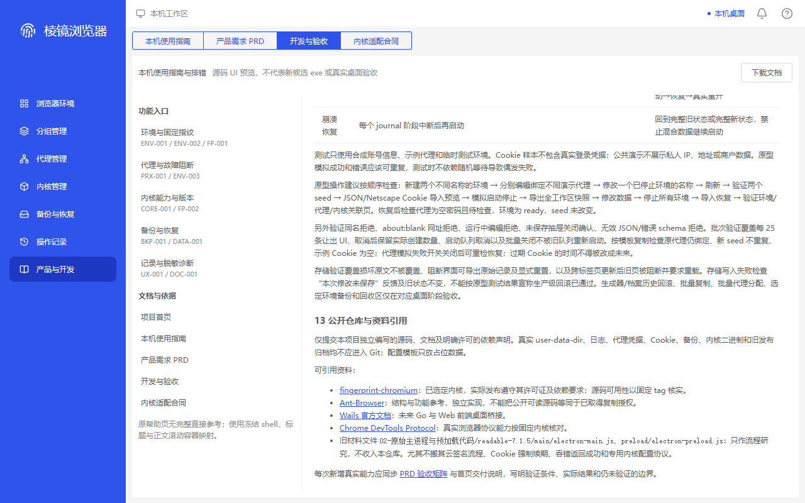
39d171ea70833e386241a6b47c2708976ffeb1c690620e03d5abede0a669861e
native-guide-kernel · 1280×800
MISSING — MISSING_DIRECT_HELP. Contract H1, native-evidence warning and requirement rows fit the panel. Following version section continues inside body scroll; no exact original-help or real-native certification is possible.
同类参考容器：settings-page；不是同名原商业执行。
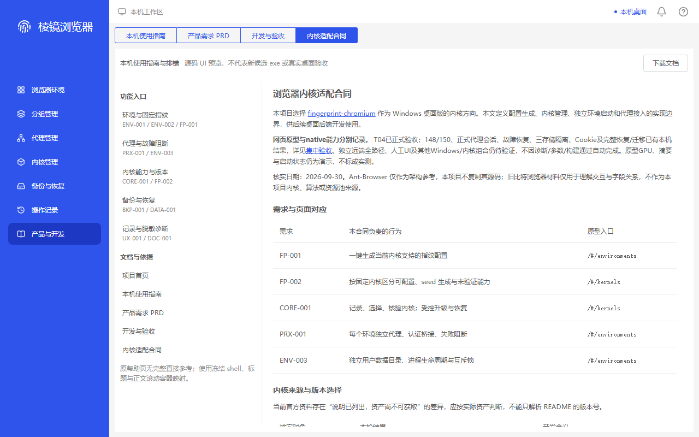
83eba868fc46a680d931644e2d3d914be62fb2f41cdf9af4a4341d5944c0af2e
native-guide-kernel-bottom · 1280×800
MISSING — MISSING_DIRECT_HELP. Completion table and final license link remain clear at the true bottom. Stationary controls remain unobscured; a settings-container match does not restore the missing help reference.
同类参考容器：settings-page；不是同名原商业执行。
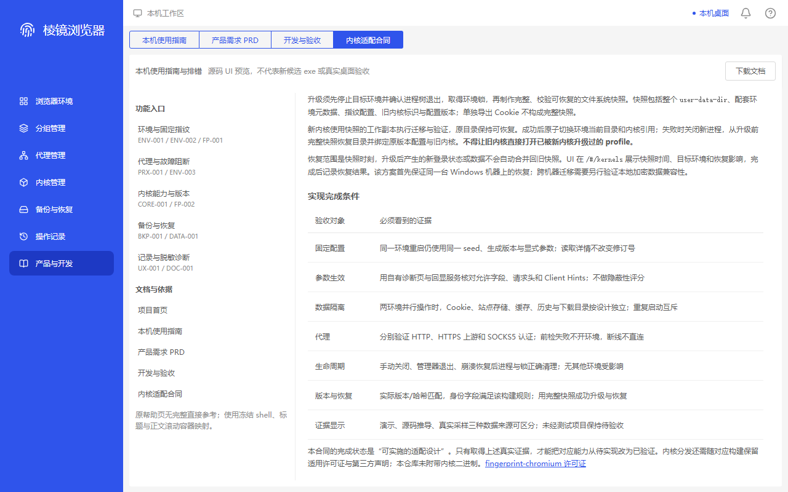
fe64ed2462b06f17a90a3a09b16082ac8361081c04ad083f2df1ee5836045223